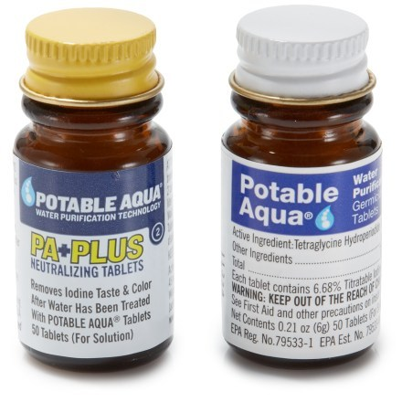
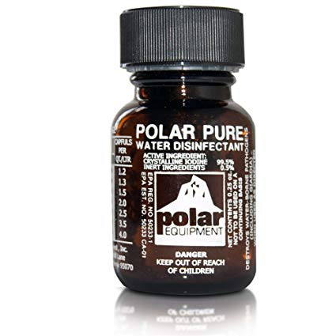
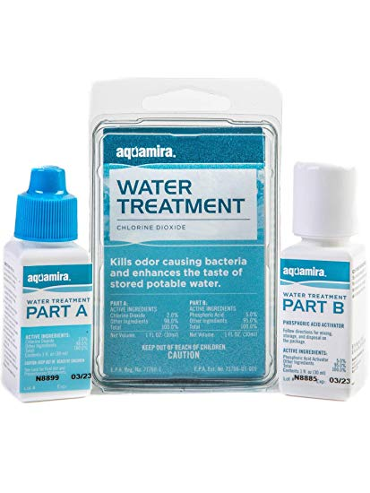

- reliable way to purify water
- boiling uses fuel and could take a while
- 100 Degrees (when you can see bubbles)


- effective and more convenient method
- available in different forms you will surely find one that would suit your budget
- ability to kill viruses and bacteria
- lightweight and easy to use
- it takes about thirty minutes before you can drink the treated water
- is also not suitable for pregnant women
- it has an aftertaste that you might not like
- drop the tablet into the water container, shake the container and hold the bottle upside down and have the lid slightly unscrewed to let the iodine to flow into the threads of the bottle cap

- has the ability to kill bacteria in water
- lightweight, affordable, and easily accessible
- wait for thirty minutes before you can drink the treated water
- need to make sure not to put so many drops as it could also be poisonous if used too much

- can remove bacteria in water
- Treated water can be consumed after the treatment and the water has no bad taste
- more costly and needs manual pumping
- you will need to clean the filters after the activity and at some point
- you will need to replace them after treating several gallons of water